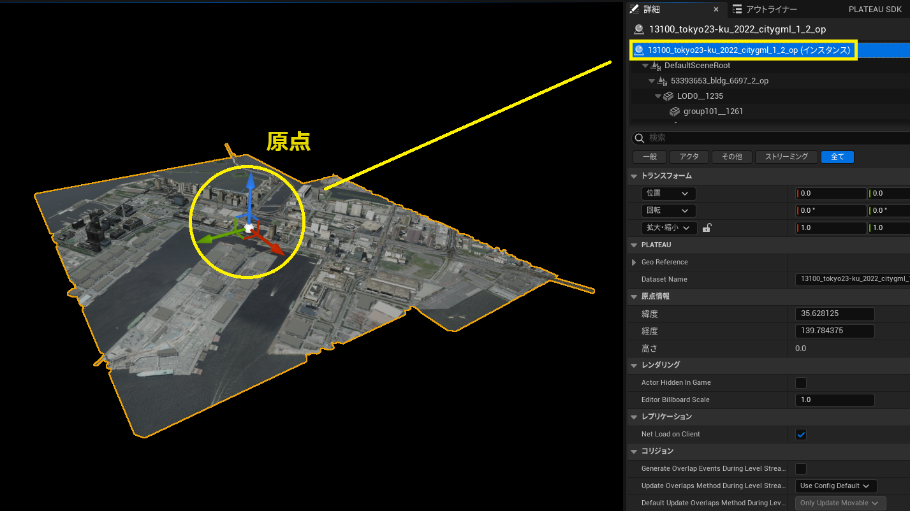
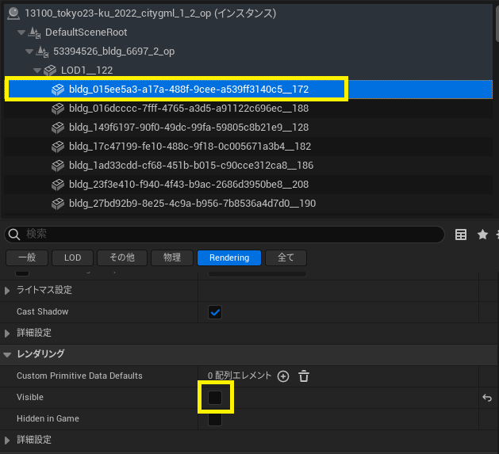
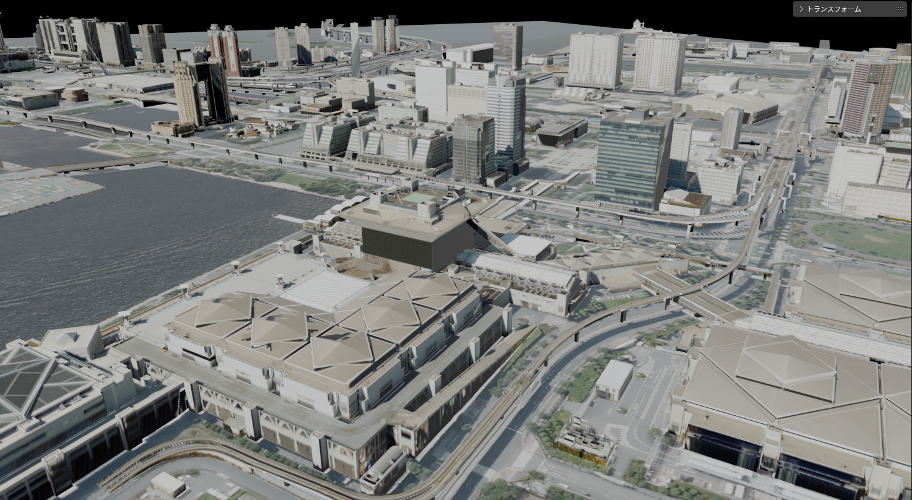

3D都市モデルのエクスポート
Unrealのレベルに配置された都市の3Dモデルを、objファイルや gltfファイルとしてエクスポートできます。
このページではエクスポートの手順を説明します。
前提
ワールド内に3D都市モデルがインポートされていることが前提です。
インポートの方法については 3D都市モデルのインポート をご覧ください。
エクスポート手順
エクスポート対象の指定
- メニューバーから
PLATEAU → PLATEAU SDKを選択します。
表示されるウィンドウの上部に4つのタブ「インポート、モデル調整、エクスポート、属性情報」があります。
このうちエクスポートを選択します。

エクスポート対象の選択 エクスポート対象をアウトライナーから選択します。

- 対象として選択できるのはインポート時に生成されたゲームオブジェクトのうち、
親子関係における最上位のものです。 - 親子関係の最上位には自動で
PLATEAUInstancedCityModelコンポーネントが付与されています。
このコンポーネントを持つゲームオブジェクトが選択対象となります。
- 対象として選択できるのはインポート時に生成されたゲームオブジェクトのうち、
出力オプションの設定
オプションの設定項目について説明します。
出力形式
- OBJ
- FBX
フォーマットを次から選択します。 お使いの用途に合わせて選択してください。- バイナリ
- ASCII
GLTF
フォーマットを次から選択します。- バイナリ
- 3Dモデルとその関連データをまとめて1つのファイルとするフォーマットです。
- ASCII
- 3Dモデル、テクスチャ、binファイルを別々のファイルとするフォーマットです。
- バイナリ
テクスチャを出力する
- 出力にテクスチャを含めるかどうかを設定します。チェックが付いていれば含みます。
座標変換- 座標の基準点を設定します。
Local(ローカル) のとき:- ポリゴンの座標は
PLATEAUInstancedCityModelの位置を原点とした座標で表されます。

- ポリゴンの座標は
Plane Cartesian(直交座標系) のとき:- ポリゴンの座標は、国土交通省が定める直交座標系のうち、インポート時に選択した直交座標系を原点とするよう平行移動されます。

上図は 国土地理院のWebサイト「わかりやすい平面直角座標系」 より引用
(原点マークは別途追記)
- ポリゴンの座標は、国土交通省が定める直交座標系のうち、インポート時に選択した直交座標系を原点とするよう平行移動されます。
- 2つの使い分けについて
- 原点付近に3Dモデルが来るようにしたいときは Local
- 原点から遠い位置に3Dモデルが配置されますが、複数の異なる都市をエクスポートするときに位置の整合性を取りたいときは Plane Cartesian が利用できます。
非表示モデルを出力する
- ヒエラルキー上で非表示になっているゲームオブジェクトを含めるかどうかを設定します。
- チェックが外れているとき、非表示のものを出力から除外します。
- ここでいう
非表示とは、下図のチェックマークが自身または親において外れている状態を指します。

座標系の設定- Unrealではobj・fbxファイルはzが上向きの右手座標系として扱われるため
エクスポートしたobj・fbxファイルをUnrealにインポートしたい場合は、 ENU を指定してください。
gltfの場合は、yが上向きの右手座標系として扱われるため WUN を指定し、インポート時にz軸を180度回転させてください。
座標軸設定の趣旨: - x,y,z 軸がどの方向を向いているかはアプリケーションによって異なりますが、
この設定項目によって座標軸の違いに合わせて変換できます。 - 座標軸の名称はアルファベット3文字で表され、
(1文字目,2文字目,3文字目) が (x軸,y軸,z軸) の向きを表します。 - 例えば、Unrealでは x軸が東(East), y軸が南(South), z軸が上(UP) を向くので、
頭文字をとって ESU が Unrealの座標系となります。 - W は 西(West) を、N は 北(North) を表します。
- Unrealではobj・fbxファイルはzが上向きの右手座標系として扱われるため
エクスポートしたobj・fbxファイルをUnrealにインポートしたい場合は、 ENU を指定してください。
エクスポートの実行
- 右端の
参照...から出力先のフォルダを指定します。 モデルをエクスポートボタンを押してしばらく待ちます。- 指定のフォルダに3Dモデルファイルが出力されます。

上図はエクスポートしたobjファイルを Blender で読み込んだものです。
Note
エクスポートした3Dモデルを再度UnrealEngineに取り込む場合
テクスチャ込みでエクスポートしたものを再度UEにインポートする場合は、
Unreal Engineの「ファイル」→「レベルにインポート」メニューを選択し、3Dモデルファイルをインポートしてください。
Note
UVのない地物のテクスチャについて
都市モデルにはUVのない地物が含まれる場合があります。
PLATEAU SDKでは、UVのない地物に対してはTriplanarを使ったデフォルトマテリアルを使用することで見た目を構成しています。
これをエクスポートするとき、テクスチャは出力可能ですが、他の3DCGソフトで見た目を再現するには同じようにTriplanarシェーダーを使用する必要があります。